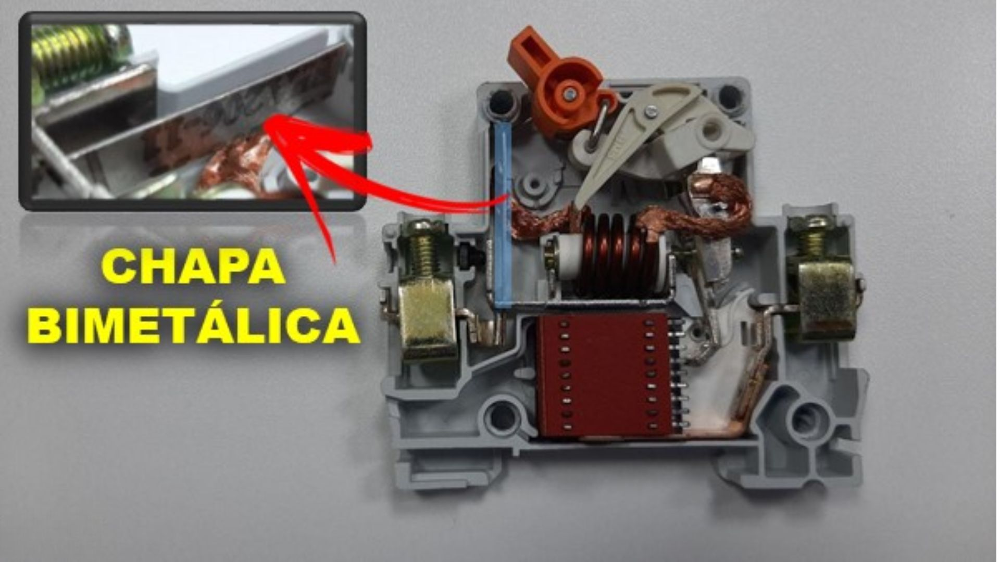
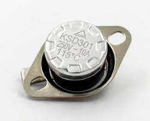
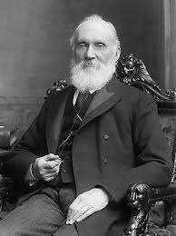

Bem-vindo ao InteraLab
O seu Laboratório Virtual. Escolha uma área abaixo para começar a interagir.
Termologia
Estudo do calor, temperatura, escalas termométricas e comportamento térmico dos corpos.
Módulo DisponívelCinemática
Estudo do movimento dos corpos, velocidade, aceleração e trajetórias.
Em BreveDinâmica
Estudo das causas do movimento, as Leis de Newton, forças e atrito.
Em BreveHidrostática
Comportamento dos fluidos em repouso, pressão, impulsão e Princípio de Arquimedes.
Em Breve1. Temperatura e Equilíbrio Térmico
Para a Física, a temperatura é uma grandeza física que está relacionada ao grau de agitação das partículas (átomos ou moléculas) de um sistema em equilíbrio térmico. Em termos microscópicos, ela está associada à energia cinética média dessas partículas.
Isso significa que, num recipiente contendo água a uma temperatura mais elevada, as moléculas apresentam maior energia cinética média e movimentam-se de forma mais intensa. Numa amostra com menor temperatura, as moléculas apresentam menor grau de agitação.
Simulador 1: Fluxo de Calor e Equilíbrio
Ajuste as temperaturas e clique em "Iniciar" para observar a energia a fluir até ao equilíbrio térmico.
Questionário 1 (Equilíbrio Térmico)
Questão 1: Aumente a temperatura do sistema A para 90 °C e do sistema B para 20 °C. O que há de diferente no movimento das moléculas dos dois sistemas? Como isso pode ser associado ao conceito de temperatura?
Questão 2: Com a temperatura do sistema A em 90 °C e a do B em 20 °C, clique em "Iniciar". Observe o que acontece com a agitação das moléculas em cada um dos sistemas. O que aconteceu com a agitação no sistema A e no sistema B ao longo do tempo?
Questão 3: Quando existe fluxo de energia (calor) e quando ele deixa de existir?
Questão 4: Dois sistemas podem ter temperatura, mas apresentar ausência de calor? Explique a diferença entre esses dois conceitos.
Respostas do Questionário 1 salvas!
Resumo dos Conceitos
- Temperatura: É a grandeza física relacionada ao grau de agitação das partículas de um sistema (sua energia cinética média). As principais unidades são graus Celsius (°C), Fahrenheit (°F) e kelvin (K).
- Calor: É a energia em trânsito que flui de um corpo para outro devido à diferença de temperatura. Medido em joules (J), calorias (cal) ou quilocalorias (kcal).
- Equilíbrio Térmico: Ocorre quando dois ou mais sistemas atingem a mesma temperatura. Não há fluxo de calor entre eles, pois a agitação térmica das partículas igualou-se.
E a Energia Térmica?
Muitas vezes confundida com calor ou temperatura, a energia térmica é a soma total da energia cinética (movimento) de todas as partículas de um corpo. Diferente da temperatura (que é apenas a média da agitação), a energia térmica depende diretamente da massa do corpo (quantidade de partículas).
Exemplo Prático: Imagine uma xícara de chá a 90 °C e a água de um oceano inteiro a 20 °C. O chá tem uma temperatura maior. No entanto, o oceano tem uma energia térmica colossalmente maior que a chávena, porque possui uma quantidade gigantesca de moléculas em movimento.
Simulador 2: Temperatura vs. Energia Térmica
Ajuste a temperatura e a massa. Descubra como um corpo mais frio pode ter mais energia térmica total do que um corpo muito quente!
Sistema 1
Sistema 2
Questionário 2 (Energia Térmica)
Questão 1: No 'Sistema 1', adicione 150 partículas a 20 °C. No 'Sistema 2', adicione 30 partículas a 100 °C. Verifique se os sistemas possuem a mesma quantidade de energia térmica. Comente a relação entre temperatura, quantidade de partículas e energia térmica total com base nesse experimento.
Questão 2: Dois corpos constituídos pelo mesmo material e com massas idênticas, porém a temperaturas diferentes, possuem a mesma energia térmica? Explique.
Questão 3: É possível que um sistema com temperatura menor possua mais energia térmica do que outro sistema que esteja a uma temperatura maior?
Respostas do Questionário 2 salvas!
2. Medição, Escalas Termométricas e o Zero Absoluto
Instrumentos de Medição
Os termômetros funcionam baseados em alguma propriedade física que muda com a temperatura (chamada de grandeza termométrica), como o volume de um líquido ou a intensidade de ondas. Abaixo será apresentado alguns modelos atuais de termômetros e também a origem das principais escalas termométricas utilizadas atualmente (Celsius, Fahrenheit e Kelvin).

No simulador é possível verificar que o líquido do interior do termômetro sofre variações ao aquecer e resfriar o líquido do recipiente. Observe também que o líquido encontra-se tudo (líquido do recipiente, do termômetro e a temperatura ambiente) em equilíbrio térmico. Ligue o fogo e adicione gelo no recipiente para observar as alterações sofridas pelo sistema.
Experimento: Aquecimento e Arrefecimento Gradual
20 °C
20.0 °C

Disjuntores termomagnéticos e termostatos bimetálicos são exemplos de dispositivos utilizados atualmente que funcionam através do fenômeno da dilatação térmica dos metais.

Esquema disjuntor

Termostato
Disjuntores termomagnéticos são dispotivos de segurança utilizados em residências para controlar a corrente elétrica e evitar acidentes. Já tesmostatos, funcionam como interruptores térmicos que são inseridos em circuitos de eletrodomésticos.
Simulador: Forno Industrial e Sensor Bimetálico

Algumas faixas da radiação infravermelha são chamadas de 'ondas de calor'. Essa radiação é emitida por todos os corpos que possuem temperatura acima do Zero Absoluto (0 K ou -273,15 °C).
Toda a faixa do infravermelho transporta energia térmica, mas nós a dividimos em 'subfaixas' porque elas interagem de formas diferentes com a matéria e têm aplicações distintas:
- Infravermelho Próximo (NIR): É a faixa mais próxima da luz visível. É muito usada em controles remotos, fibras ópticas e leitores de código de barras. Embora carregue energia, não é a faixa que mais associamos à sensação imediata de 'calor na pele' vindo de objetos comuns.
- Infravermelho Médio (MIR): Usado principalmente em sensores de presença e equipamentos de análise química (espectroscopia) para identificar substâncias através da vibração de suas moléculas.
- Infravermelho Distante (FIR): Também chamado de infravermelho termal. Esta é a faixa que os objetos em temperatura ambiente (incluindo o corpo humano) emitem com mais intensidade. É a radiação captada por câmeras térmicas e o tipo de calor emitido por saunas e aquecedores cerâmicos.
No simulador, é possível identificar um termômetro recebendo calor (ondas de infravermelho) de um objeto. Se o objeto for aquecido, a emissão aumenta. Quanto maior a radiação recebida pelo termômetro, maior será a temperatura que ele registrará.
Simulador: Pirômetro Óptico (Radiação Térmica)

As Escalas Termométricas e Seus Criadores
Para que um termômetro tenha utilidade, ele precisa de uma "escala" de valores baseada em pontos fixos da natureza (como a fusão do gelo e a ebulição da água).
- Escala Celsius (°C): Criada pelo astrónomo sueco Anders Celsius em 1742. Ele definiu o ponto de fusão do gelo como 0 °C e o ponto de ebulição da água como 100 °C. Por ter 100 divisões iguais, é chamada de escala centígrada.
- Escala Fahrenheit (°F): Criada pelo físico Daniel Gabriel Fahrenheit em 1724. Ele usou a temperatura mais fria que conseguiu no laboratório (mistura de água, gelo e sal) como 0 °F e a temperatura do corpo humano perto de 96 °F. A água congela a 32 °F e ferve a 212 °F.
- Escala Kelvin (K): Proposta por William Thomson - Lord Kelvin em 1848. É uma escala "absoluta", que não depende do comportamento de uma substância específica, mas sim do limite absoluto da natureza.
CRIADORES DAS ESCALAS TÉRMICAS

Daniel Gabriel Fahrenheit (1686–1736)
Físico e engenheiro alemão. Em 1724, ele propôs a primeira escala de temperatura padronizada e reprodutível, a escala Fahrenheit. Sua inovação foi o desenvolvimento de um termômetro de mercúrio de alta precisão, permitindo medições mais confiáveis. Ele estabeleceu seus pontos de referência usando uma mistura de água, gelo e cloreto de amônio, e a temperatura do corpo humano.
Anders Celsius (1701–1744)
Astrônomo sueco, físico e matemático. Ele é conhecido por propor, em 1742, uma escala de temperatura que mais tarde foi renomeada para escala Celsius em sua homenagem. Curiosamente, sua escala original invertia os pontos de ebulição e fusão: ele definiu 0° como o ponto de ebulição e 100° como o ponto de fusão da água ao nível do mar.

Lord Kelvin (William Thomson) (1824–1907)
William Thomson, mais tarde Lord Kelvin, foi um físico e engenheiro britânico. Ele propôs a escala Kelvin em 1848. Ao contrário das escalas anteriores, a escala Kelvin é uma escala absoluta, começando no zero absoluto, a temperatura teórica onde todo movimento molecular cessa. É a unidade de temperatura fundamental no Sistema Internacional de Unidades (SI).
Conversões entre Escalas (°C, °F e K)
Podemos transitar entre os valores de qualquer uma destas três escalas utilizando a seguinte relação matemática de proporção:
Simulador Comparador de Escalas
25.0 °C = 77.0 °F = 298.2 K
O Zero Absoluto (O Limite da Natureza)
Se arrefecermos um sistema continuamente, as partículas vão perdendo energia cinética e ficando cada vez mais lentas. O limite teórico em que essa agitação se torna a menor possível (quase nula) é o Zero Absoluto.
Esse estado extremo da matéria corresponde a 0 K, o que equivale a -273,15 °C ou -459,67 °F. É por isso que não existem valores negativos na escala Kelvin: não existe movimento menor do que "estar totalmente parado"!
Simulador: Rumo ao Repouso Total
Temperatura Atual: 300 K
Simulador: Agitação Molecular e Estados da Matéria
Estado: Líquido
Questionário 3 (Escalas e Limites Térmicos)
Questão 1: Utilize o Simulador Comparador de Escalas para encontrar a temperatura de ebulição da água (100 °C). Quais são os valores exatos nas escalas Fahrenheit e Kelvin?
Questão 2: Baseado na teoria de Lorde Kelvin e interagindo com o Simulador do Repouso Total, explique fisicamente por que não existem valores negativos na escala Kelvin.
Respostas do Questionário 3 salvas!
Painel de Acompanhamento (Professor)
Relatório de desempenho e respostas capturadas no navegador local.